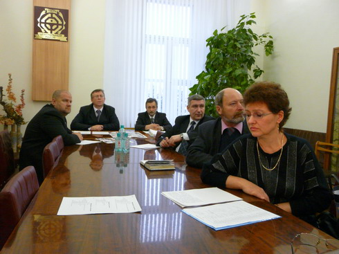
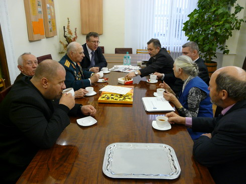

| В Тверской городской Думе.

В октябре в Тверской городской Думе была создана депутатская группа «Никто не забыт, ничто не забыто», возглавил её заместитель Председателя городской Думы Рогозин С.Н. В состав группы вошли депутаты Думы Комиссаров А.И. и Лисичкин Д.Ю. Первоочередными задачами, которые ставит перед собой депутатская группа являются: координация проводимых мероприятий по патриотическому воспитанию населения города в ходе подготовки к 65-летию Великой Победы; участие в работе по увековечению памяти о погибших в боях при обороне и освобождении г. Калинина на воинских мемориалах города; сбор и публикация материалов о фронтовых судьбах и мирном труде участников Великой Отечественной войны, тружеников тыла, блокадников, участников локальных войн и вооруженных конфликтов, ликвидаторов техногенных катастроф и чрезвычайных ситуаций.
17 ноября прошло первое плановое заседание депутатской группы. На этом заседании отв. секретарь Фонда «Жить и Помнить» А.Терентьев проинформировал депутатов о ходе работы по уточнению сведений о захороненных на воинском мемориале Смоленского кладбища. К этому времени уточнены данные о более 120 захороненных, у 23 из них исправлены неточности в написании фамилий и имен. Выявлено, что в список захороненных три человека внесены дважды. Было отмечено, что практически у всех удается установить год рождения и дату гибели. По окончанию проверки на каждого захороненного будет составлена электронная карта, включающая данные из донесений воинских частей о безвозвратных потерях, книг учета умерших в лечебных учреждениях, информацию о месте рождения и призыва, последней воинской части, в составе которой погибший проходил службу. В планах Фонда и анализ того, каким образом увековечена память о погибшем.
Сотрудник военного комиссариата г. Твери Г.П. Кирсанова рассказала участникам заседания о работе по установлению ветеранов войны, которым еще не вручены их боевые награды и представила депутатам список награжденных.
На заседании было принято решение направить запросы главам районов города о планируемых в муниципальных образованиях мероприятиях по подготовке к празднованию 65-летия Победы.

Рабочая группа поддержала инициативу депутата Лисичкина Д.Ю. о создании на базе музея им. Л.Чайкиной городского дома ветеранов им. Л.Чайкиной.
В конце заседания прошла встреча депутатов с участниками Великой Отечественной войны Заволжского района города.
|